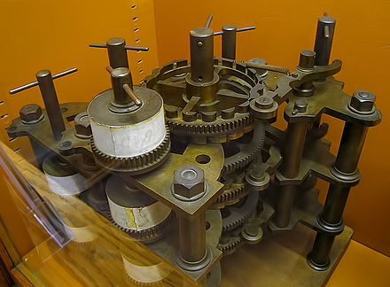
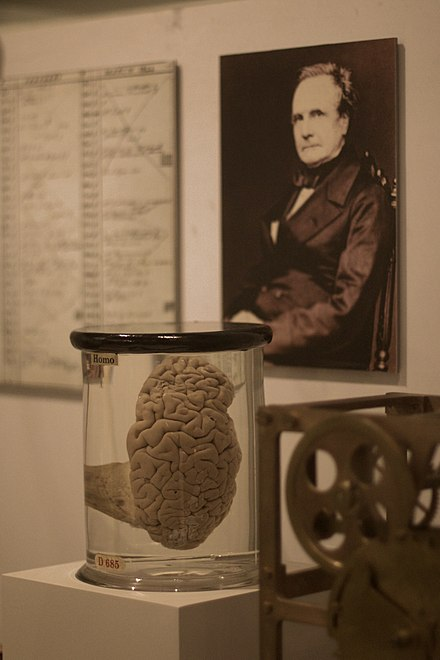
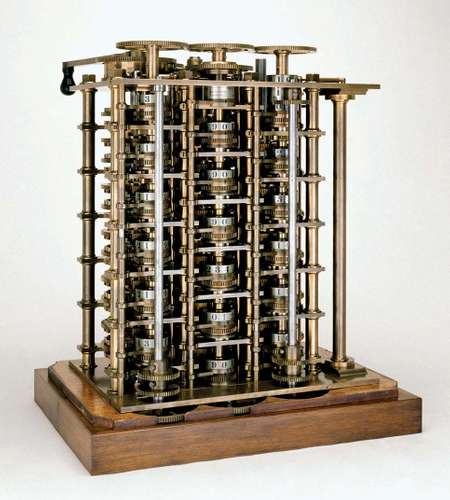
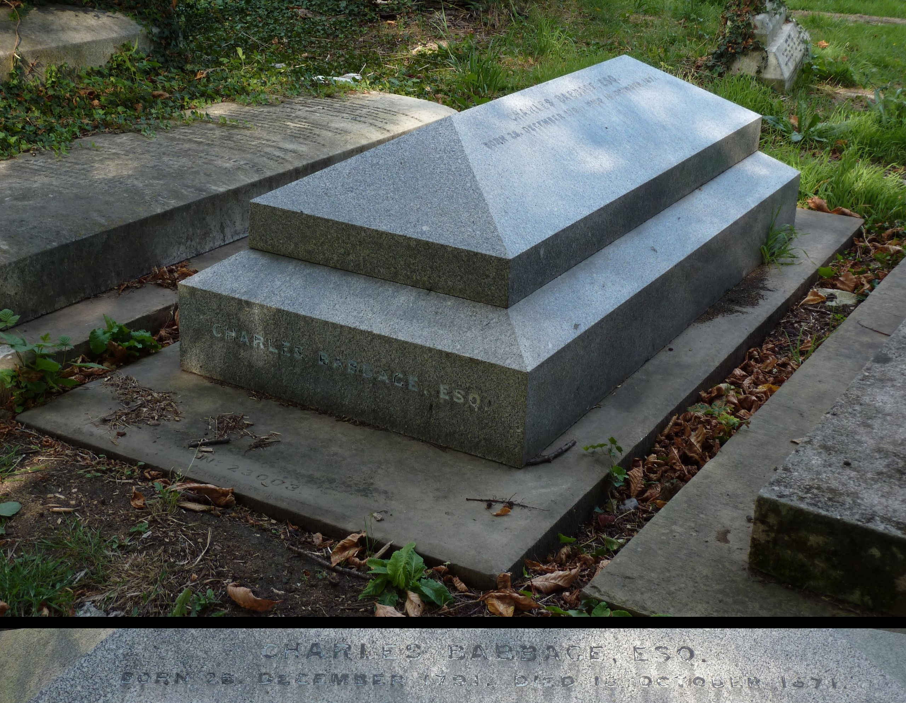
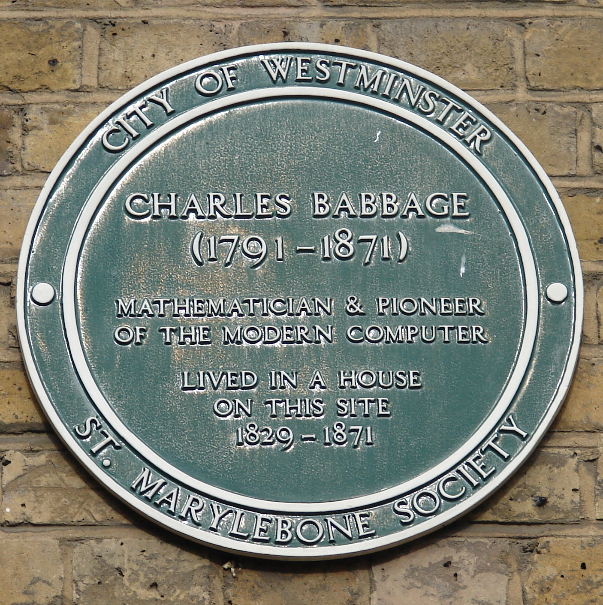

Charles Babbage was a mathematician as well as an inventor who created the first digital computer.
He is widely regarded as the "Father of Computers". He was born on the 26th of December 1971 in London, England and died on the 18th of October in 1871 in the same city.
Notable facts:
Mr. Babbage a brilliant self-taught mathematician
He started studying at Trinity College in Cambridge in October 1810
After his graduation, Charles Babbage had a lot of difficulty in finding a job
Babbage was a part of founding the Royal Astronomical Society in 1820
The creation of the first computer originated from the want to erase errors in mathematical tables
From 1828 to 1839, Babbage was a Lucasian Professor of Mathematics at Cambridge
He had a distaste for commoners and street music as observed in his writing
A prototype made to calculate polynomial functions named the difference engine was created by Babbage with the help of Joseph Clement, some parts remain in the Museum of the History of Science, Oxford
Charles Babbage worked on a design even more complex than the difference engine named the analytical engine, it worked as a general purpose computation machine, in other words, the first computer
Most of Mr. Babbage's inventions were completed only after his death as he had a lot of problems with funding
A part of the analytical engine in King George III Museum in King's College, London in 1843.

A part of the difference engine in Whipple Museum of the History of Science, England.

The brain of Mr. Babbage on display at the Science Museum in London.
By Alan Levine
from Strawberry, United States - Babbage's BrainUploaded by
PDTillman, CC BY 2.0,
Link

Another view of the difference engine

Babbage's grave by Deeday-UK
- Own work, CC BY-SA 4.0,
Link

Babbage's plaque in London By Simon Harriyott
from Uckfield, England - Charles Babbage
Uploaded by Oxyman, CC BY 2.0,
Link